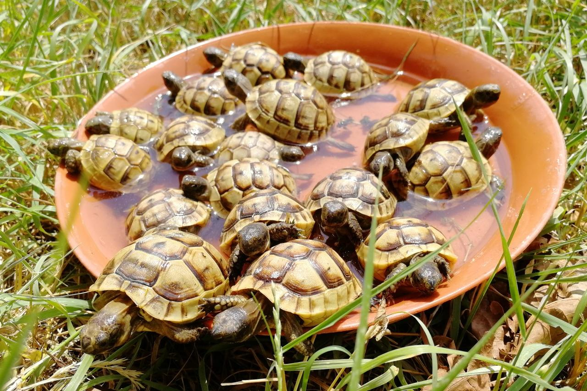
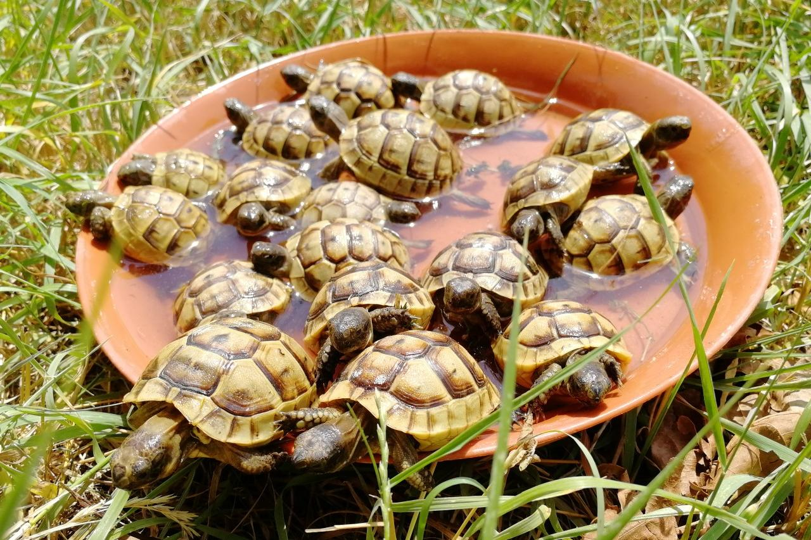

|  | Содержание страницы |

|
НЕВЕРОЯТНЫЕ РЕПТИЛИИ! |

|
|
|
НЕВЕРОЯТНЫЕ РЕПТИЛИИ! |
|
|  | Содержание страницы |
Черепахи (лат. Testudines) — один из четырёх современных отрядов пресмыкающихся. Содержит около 328 современных видов, группируемых в 14 семейств и два подотряда. Ископаемые остатки черепах прослеживаются на протяжении более 220 миллионов лет.
Несмотря на то, что традиционно черепахи рассматривались как анапсиды, все генетические исследования подтвердили гипотезу о том, что черепахи — это диапсиды с редуцированными височными окнами; некоторые авторы помещали черепах в группу лепидозавроморф, хотя все более поздние исследования подтвердили их положение внутри группы архозавроморф.
Отличительным признаком черепах является панцирь, состоящий из двух частей: карапакса и пластрона, и служащий основной защитой от врагов.
Вопрос о происхождении черепах до сих пор остаётся открытым. Условно их предками считались пермские котилозавры, а именно эвнотозавры (Eunotosaurus) — небольшие, похожие на ящериц животные с короткими и очень широкими рёбрами, образующими подобие спинного щита. Но также встречалось мнение, что черепахи произошли от особой группы парарептилий — потомков дискозаврисков (амфибий). Последние филогенетические исследования указывают на то, что черепахи являются диапсидами с редуцированными височными окнами и являются сестринской группой по отношению к архозаврам, в наше время представленным крокодилами и птицами. Таким образом, черепахи обособились значительно позже, чем считалось ранее. Первая известная науке черепаха Odontochelys semitestacea появилась 220 миллионов лет назад в мезозойскую эру в триасовый период. Эта черепаха имела только нижнюю половину панциря, а во рту у неё были зубы, что не характерно для современных черепах. Вторая по древности черепаха Proganochelys quenstedti (210 миллионов лет назад, триасовый период) уже имела полностью сформированный панцирь, но во рту у неё тоже присутствовали зубы.
Из 26 известных науке семейств черепах 12 существуют и сегодня. Известно множество ископаемых видов черепах, среди которых крупнейшими сухопутными черепахами были представители рода миолания (Meiolania) с длиной панциря около 2,5 м. Они имели огромный, практически одной длины с панцирем, мощный хвост, усаженный двумя рядами костяных уплощённых шипов, а на концах их треугольных черепов располагались длинные притупленные «рога», направленные назад и вбок.
Черепахи ведут одиночный образ жизни и обычно ищут общества себе подобных только в брачный период, хотя некоторые виды могут собираться в группы на время зимовки. Некоторые пресноводные черепахи даже вне брачного периода агрессивно реагируют на своих сородичей, например жабоголовые черепахи (Phrynops geoffroanus). Красноухие черепахи (Trachemys scripta) по очереди очищают панцири друг друга от водорослей.
Сухопутные черепахи питаются в основном растительной пищей, а пресноводные, наоборот, в большинстве своём хищники. Они поедают различных рыб, а также моллюсков, членистоногих и других беспозвоночных. Но и те и другие охотно включают в свой рацион корм, казалось бы, им несвойственный: растительноядные — животную пищу, хищники — растительную. Среди морских черепах есть и хищные, и растительноядные (зелёная черепаха), и всеядные виды. Многие пресноводные виды черепах в детстве ведут хищнический образ жизни, а повзрослев, становятся растительноядными.
Разнообразные виды черепах населяют бо́льшую часть суши и вод тропического и умеренного поясов. Их нет в холодных краях, некоторых пустынях, на тихоокеанском побережье Южной Америки, и в Новой Зеландии.
На территории России встречаются: головастая черепаха, кожистая черепаха, дальневосточная черепаха, болотная черепаха, каспийская черепаха, средиземноморская черепаха.
В Казахстане и странах Средней Азии обитает также среднеазиатская черепаха (Agrionemys horsfieldii).

Черепахи занимают заметное место в мифологии и культуре многих народов. Особенно значительную роль они играли в мифологии Китая, где черепаха, наряду с драконом, цилинем и фениксом, традиционно причислялась к «четырём благопожелательным существам» — а в доисторические времена, черепаха, возможно, считалась и моделью мироздания.
В мифологии народов Африки Земля изображается в образе черепахи, поскольку её внешний облик и окрас придают ей сходство с почвой. Черепаха также является популярным персонажем африканских сказок, ей приписываются сверхъестественные способности и причастность к магии.
Форма черепахи вдохновляла многих скульпторов. Каменные черепахи уже более полутора тысяч лет гордо несут стелы китайских императоров. Они украшают фонтаны в Италии и Испании.